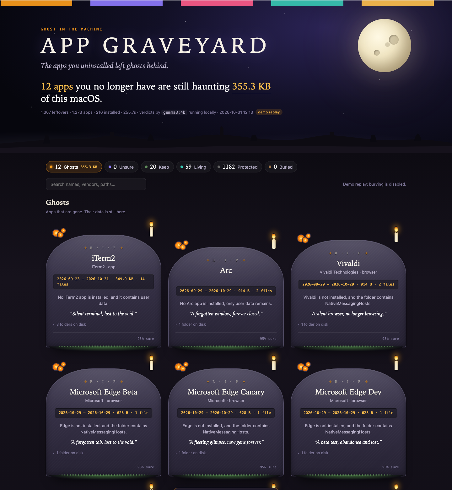

Get started in four steps
No terminal needed. Steps 1 and 2 are one-time installs; after that, everything runs offline.
Install Python 3
macOS and most Linux already have it. On Windows, get it from python.org and tick Add python.exe to PATH in the installer.
Install Ollama
Download it from ollama.com and open it once. It is the small program that runs the AI model on your machine.
The model itself (Gemma 3, about 3 GB) is downloaded from inside App Graveyard the first time, one click.
Download and double-click
Unzip the download, open the folder, and double-click the launcher for your system:
A small window stays open and the graveyard opens in your browser. On macOS, if the first double-click is refused, right-click the file and choose Open.
Press Scan this machine
The page checks that the model is ready, then scans with a progress bar: a few seconds for the folders, a few minutes for the model.
Read every verdict, then bury what you agree with. Restore is one click away, always.

Offline, private, reversible
The three things that matter when a tool reads your application data.
Works offline
Internet is needed twice, ever: to download this app and to download the model. After that the scan, the model and the page all run on 127.0.0.1. Unplug the network and it still works.
Nothing leaves your computer
The list of apps you have used is a profile of you. The only network call in the code is to Ollama on localhost. No API key, no account, no telemetry.
Never deletes
Bury is a move, not a delete. Folders go to ~/.app-graveyard/quarantine/ with a manifest that records where each one came from. Restore puts them back exactly.
Rules first, model last
Operating-system folders are protected and can never be buried. Folders of installed apps are matched without AI. Only what nothing can explain goes to the model, four apps at a time, and a low-confidence verdict is marked unsure rather than ghost.
Prefer a terminal?
Same thing, typed.
ollama pull gemma3:4b # one time; gemma3:1b is faster on small machines git clone https://github.com/raushanichaudhary77-create/app-graveyard cd app-graveyard python -m appgraveyard # scan, consult the model, open the graveyard python -m appgraveyard open # just open the page and scan from there
More commands
python -m appgraveyard scan # scan only, print a summary python -m appgraveyard serve # reopen the last report python -m appgraveyard buried # list everything in quarantine python -m appgraveyard restore ID # put a buried app back python -m appgraveyard --no-model # skip the model, judge by idle time only GRAVEYARD_MODEL=gemma3:1b python -m appgraveyard # use a different local model